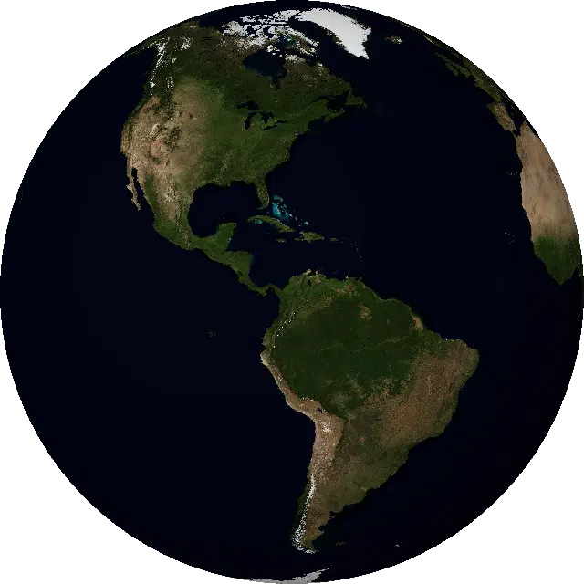

Ubica tu parcela
Busca una localidad, elige un punto en el mapa o ingresa coordenadas. Dibuja el contorno para estimar el área.
Abrir el mapa mundial ↗
NASA Space Apps Challenge 2026
Explora el clima de tu parcela con datos de la NASA y compara rotaciones de cultivo según la demanda de agua y la cobertura del suelo.
Conoce el proyecto ↓El proyecto
Project TERRASPROUT es nuestra propuesta para Field Shift. Ayuda a explorar cómo agricultores de distintos países pueden adaptar sus rotaciones a cambios de temperatura, precipitación y disponibilidad de agua.
Ver el reto oficial ↗Busca una localidad, elige un punto en el mapa o ingresa coordenadas. Dibuja el contorno para estimar el área.
Abrir el mapa mundial ↗Revisa siete variables diarias de NASA POWER en el período que elijas. El explorador busca escenas de ECOSTRESS para el punto seleccionado y muestra miniaturas según la cobertura y la disponibilidad.
Contrasta tres secuencias de cultivo con estimaciones de demanda de agua y cobertura del suelo. La comparación es orientativa.
Del globo al análisis de una parcela con datos de la NASA.
Quiénes somos
Equipo multidisciplinario de Ica, Perú, que combina observación de la Tierra, ciencia agrícola y tecnología.